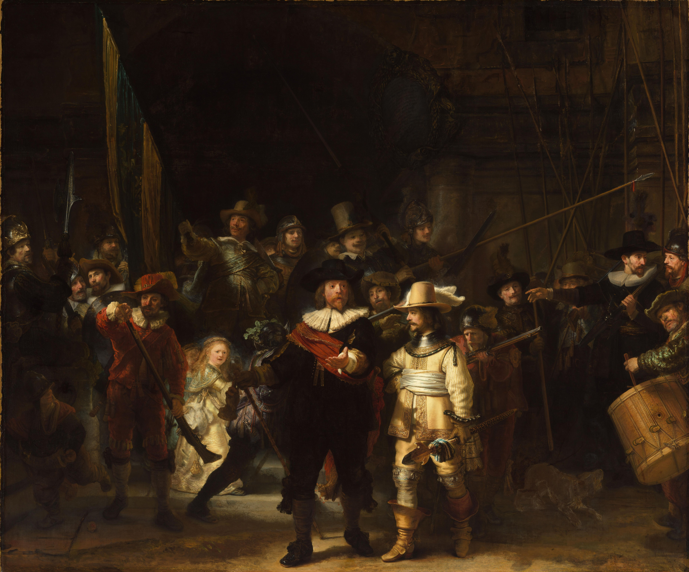

The Night Watch Militia Company of District II under the Command of Captain Frans Banninck Cocq
Artist: Rembrandt van Rijn
Year: 1642
Featured in Cinema
Film(s): Nightwatching(2007)
The Connection
Rembrandt's The Night Watch (1642) is the central subject of Nightwatching (2007), which explores the painting's creation and the mysteries surrounding its figures. The film reimagines Rembrandt's artistic process, suggesting that the arrangement of the militia members contains hidden clues and political intrigue. Through this connection, the painting becomes more than a historical portrait, serving as the foundation for a cinematic mystery.
← Back to Exhibition